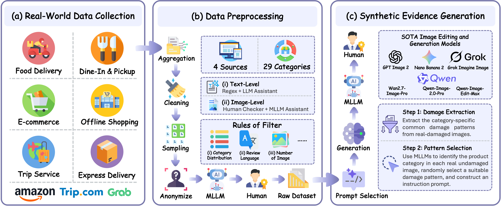
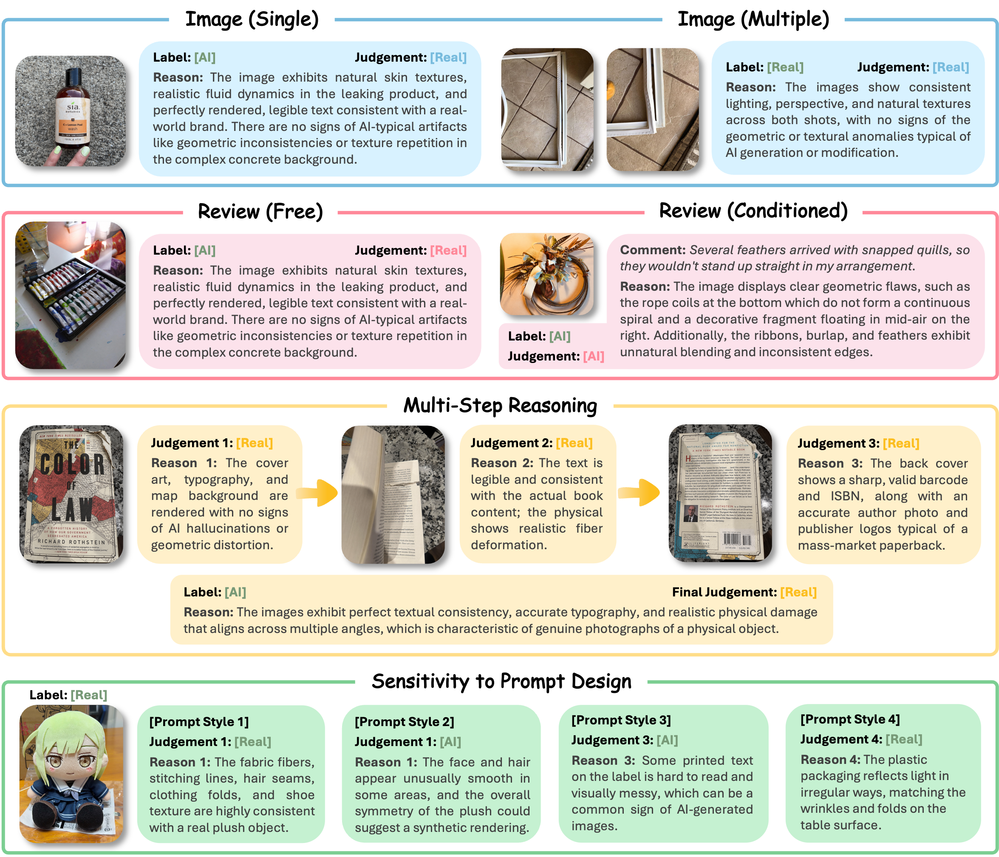

Artificial Intelligence (AI)-generated images have become increasingly realistic and readily adaptable to concrete real-world claims, creating new challenges for verifying visual evidence. A concrete emerging risk is AI-generated refund fraud, in which manipulated or synthetic images are used to support claims about damaged products, poor delivery conditions, or service-related defects. Existing AI-generated image detection benchmarks mainly evaluate standalone authenticity classification, cross-generator transfer, or forensic localization, leaving claim-conditioned fraudulent evidence detection underexplored.
To bridge this gap, we introduce FraudBench, a multimodal benchmark for detecting AI-generated fraudulent refund evidence. FraudBench is constructed from real-world user-review evidence across e-commerce, food delivery, and travel-service scenarios. We curate real evidence images together with their associated review and product metadata, identify genuine damaged and undamaged evidence through MLLM-assisted filtering and human annotation, and synthesize fake-damaged evidence from genuine undamaged reference images using six state-of-the-art image editing and generation models.
Using FraudBench, we evaluate 11 MLLMs, 4 specialized AI-generated image detectors, and human participants under the same settings. Experiments show that current MLLMs often recognize real-damaged evidence but fail on many fake-damaged subsets, with fake-damage detection rates (TPR) far below the 50% baseline on most generator subsets. Specialized detectors generally perform better but remain inconsistent across generators and can produce false positives on real-damaged samples, revealing a clear gap between generic AI image detection and reliable claim-conditioned refund-evidence verification.

📄 Figure: Construction Pipeline590 review samples across 27 e-commerce product categories
Travel-service reviews covering hotel, attraction, and transportation complaints
Food delivery and dine-in & pickup service evidence
Self-collected real-world samples under everyday acquisition conditions

📄 Figure: Evaluation Mode ExamplesFigure 2. Representative examples covering the five evaluation dimensions: input modality, contextual information, multi-step reasoning, prompt sensitivity, and real image preservation.
FraudBench evaluates detection capability along five complementary dimensions reflecting real-world refund-evidence verification conditions.
Single-Image vs. Multi-Image evaluation. Multi-image setting allows the model to exploit cross-image cues such as consistent lighting, viewpoint, and damage appearance within the same review.
Review-Free vs. Review-Conditioned evaluation. Tests whether associated user review text improves detection quality or introduces misleading shortcuts.
Compares direct joint inference against a structured per-image decomposition step before a final aggregated verdict, testing whether evidence integration improves reliability.
Evaluates each detector with five semantically equivalent prompt styles to measure whether decisions are driven by stable visual evidence or surface prompt phrasing.
Assesses True Negative Rate (TNR) on genuine damaged evidence. Central to trustworthy refund adjudication — falsely accusing an honest customer damages platform trust.
Wrongly Accusing an Honest Customer → Severe Trust Crisis
Missing AI-Fabricated Evidence → Direct Financial Losses
The Central Dilemma of Current Detection Paradigms
MLLMs preserve genuine evidence but systematically miss AI-manipulated damage. Specialized detectors detect synthetic images but frequently flag real damaged goods as fake.
Across MLLMs in the single-image no-review setting, the average real-image TNR is 0.947 — but the average fake-damage TPR is only 0.197. The dominant failure mode is not excessive rejection of genuine evidence, but systematic under-detection of synthetic refund claims.
Detection difficulty varies substantially across generators. Average MLLM TPR is only 0.080 on GPT Image 2 but rises to 0.351 on Qwen-Image-Edit. Frontier text-to-image models produce more visually integrated fake-damaged evidence than image-editing pipelines.
The best specialized detector (ForgeLens [GenImage]) achieves 0.904 balanced accuracy but is highly checkpoint-dependent. Effort [Chameleon] achieves high TPR (avg 0.854) but only TNR of 0.051 on real images — making it unsuitable for real-world refund adjudication.
Multi-image context significantly boosts Gemini 3 Flash from 0.720 (single-image+review) to 0.823 balanced accuracy (multi-image+review). Yet review text alone adds minimal gain (+0.005), revealing that models struggle to ground textual claims in visual evidence.
Salient defects (cracked, leaking, shattered) are easier to detect (avg TPR ~0.25–0.30). Subtle deformations (packaging-damaged, bent/warped) are much harder (avg TPR ~0.12–0.14). Packaging-damage detection is near zero for several MLLMs.
Human participants outperform most MLLMs but still exhibit non-negligible error rates. For the easiest generator (Qwen-Image-Edit), human TPR is 0.709 vs. 0.793 TNR, confirming that even manual inspection struggles with these highly realistic AI manipulations.
Single-Image, No-Review Setting · TPR ↑ = Fake-Damage Detection Rate · TNR ↑ = Real-Image Preservation Rate
Bold = Best in Group | Underline = Second Best | Red = Problematic Value
Multimodal Large Language Models (MLLMs)| Model | Fake-Damage TPR ↑ · by Generator | Overall | Real-Damaged TNR ↑ |
||||||
|---|---|---|---|---|---|---|---|---|---|
| GPT Image 2 | Grok Imagine | Nano Banana 2 | Wan2.7-Image | Qwen-Image-2.0 | Qwen-Image-Edit | Bal.Acc ↑ | F1 ↑ | ||
| GPT-5.4 mini | 0.040 | 0.045 | 0.083 | 0.129 | 0.147 | 0.285 | 0.558 | 0.212 | 0.994 |
| Gemini 3 Flash | 0.158 | 0.199 | 0.258 | 0.398 | 0.491 | 0.692 | 0.674 | 0.526 | 0.982 |
| Grok 4.1 Fast Reasoning | 0.105 | 0.135 | 0.144 | 0.188 | 0.218 | 0.262 | 0.538 | 0.279 | 0.901 |
| Grok 4.20 Reasoning | 0.062 | 0.065 | 0.141 | 0.199 | 0.161 | 0.242 | 0.562 | 0.244 | 0.979 |
| Kimi K2.6 | 0.026 | 0.052 | 0.079 | 0.218 | 0.260 | 0.356 | 0.581 | 0.277 | 0.996 |
| Qwen3.6-Plus | 0.077 | 0.140 | 0.179 | 0.266 | 0.325 | 0.441 | 0.608 | 0.371 | 0.977 |
| Qwen3.6-35B-A3B | 0.144 | 0.242 | 0.262 | 0.365 | 0.407 | 0.531 | 0.603 | 0.476 | 0.882 |
| Qwen3.5-Omni-Plus | 0.008 | 0.035 | 0.049 | 0.103 | 0.137 | 0.202 | 0.544 | 0.159 | 1.000 |
| Qwen3-VL-Flash | 0.043 | 0.090 | 0.172 | 0.247 | 0.278 | 0.364 | 0.592 | 0.321 | 0.986 |
| Qwen3-VL-Plus | 0.002 | 0.006 | 0.024 | 0.050 | 0.049 | 0.108 | 0.518 | 0.075 | 0.997 |
| QVQ-Max-Latest | 0.220 | 0.239 | 0.294 | 0.321 | 0.335 | 0.383 | 0.510 | 0.438 | 0.721 |
| Random Guessing | 0.500 | 0.500 | 0.500 | 0.500 | 0.500 | 0.500 | 0.500 | — | 0.500 |
| Human Reference | 0.420 | 0.509 | 0.539 | 0.598 | 0.697 | 0.709 | 0.686 | 0.704 | 0.793 |
| Model | Fake-Damage TPR ↑ · by Generator | Overall | Real-Damaged TNR ↑ |
||||||
|---|---|---|---|---|---|---|---|---|---|
| GPT Image 2 | Grok Imagine | Nano Banana 2 | Wan2.7-Image | Qwen-Image-2.0 | Qwen-Image-Edit | Bal.Acc ↑ | F1 ↑ | ||
| CO-SPY [ProGAN] | 0.977 | 0.099 | 0.312 | 0.218 | 0.894 | 0.996 | 0.782 | 0.733 | 0.982 |
| CO-SPY [SD-v1.4] | 0.360 | 0.310 | 0.282 | 0.360 | 0.339 | 0.349 | 0.509 | 0.455 | 0.685 |
| ForgeLens [ProGAN] | 0.700 | 0.217 | 0.516 | 0.823 | 0.859 | 0.925 | 0.815 | 0.798 | 0.958 |
| ForgeLens [GenImage] | 0.967 | 0.158 | 1.000 | 0.990 | 1.000 | 0.989 | 0.904 | 0.915 | 0.957 |
| Effort [SD-v1.4] | 0.710 | 0.546 | 0.658 | 0.755 | 0.858 | 0.890 | 0.795 | 0.828 | 0.853 |
| Effort [Chameleon] | 0.828 | 0.824 | 0.868 | 0.882 | 0.849 | 0.872 | 0.452 | 0.838 | 0.051 |
| IAPL [ProGAN] | 0.255 | 0.295 | 0.140 | 0.122 | 0.398 | 0.568 | 0.628 | 0.438 | 0.960 |
| IAPL [SD-v1.4] | 0.973 | 0.895 | 0.916 | 0.996 | 0.955 | 0.994 | 0.727 | 0.932 | 0.499 |
| Random Guessing | 0.500 | 0.500 | 0.500 | 0.500 | 0.500 | 0.500 | 0.500 | — | 0.500 |
| Human Reference | 0.420 | 0.509 | 0.539 | 0.598 | 0.697 | 0.709 | 0.686 | 0.704 | 0.793 |
Confidence scores (Conf.) omitted for readability. Full results including Conf. are in the paper.